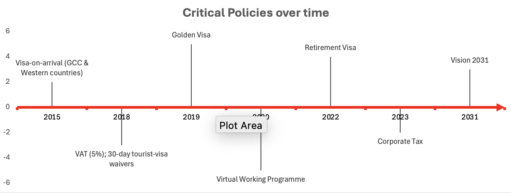
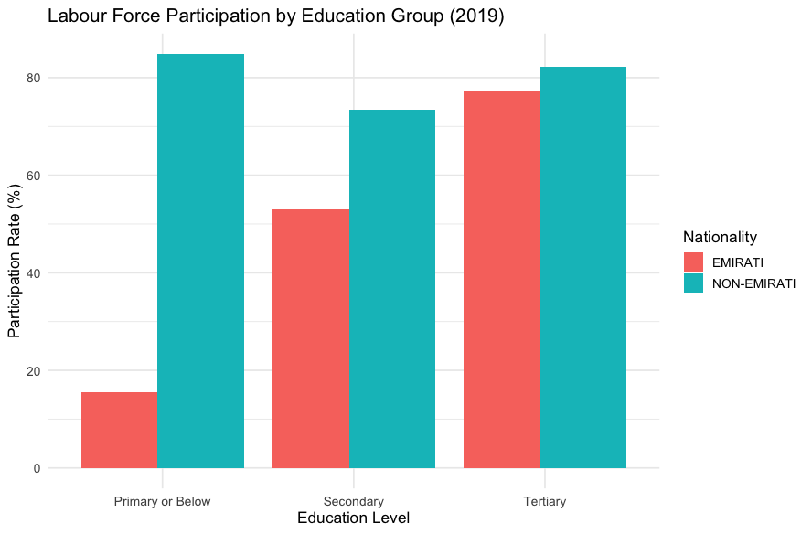
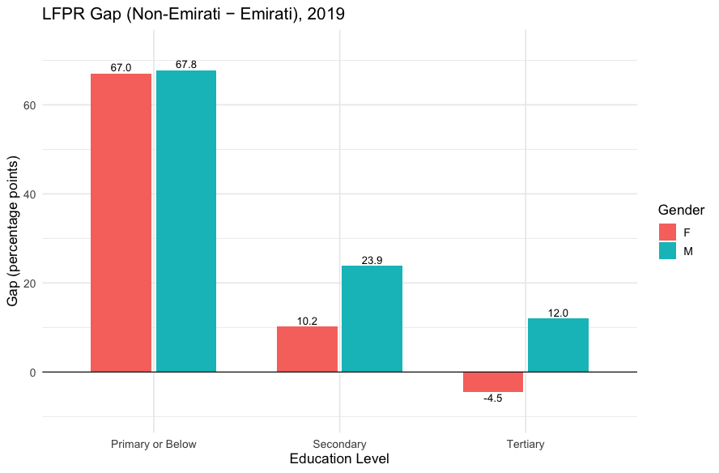
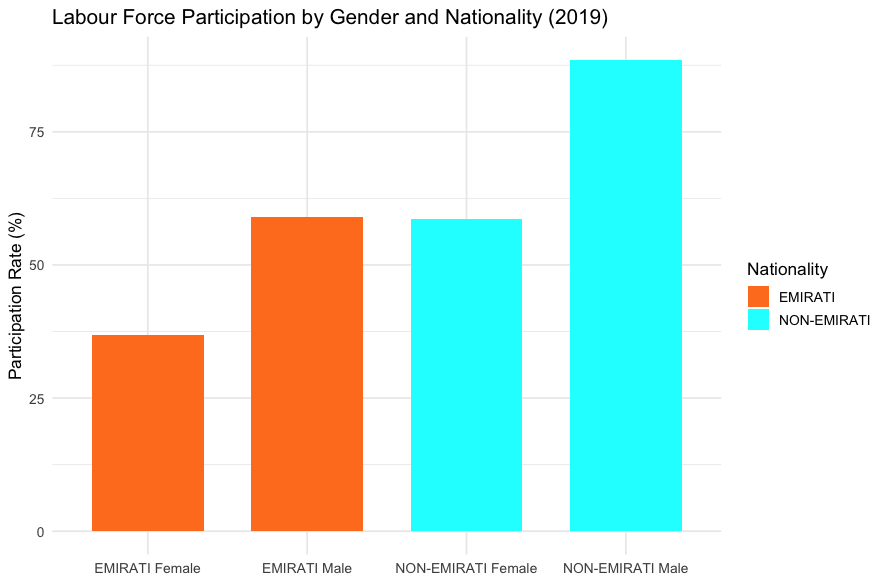

The UAE is often recognised for its oil wealth but its growth story goes much further. The country has introduced reforms such as tax policy, new trade agreements and Expo 2020 that reshaped the economy. This project looks at GDP trends together with these decisions to show how the UAE’s development is more than oil.

Source: World Bank (real GDP).
In 2009 the UAE economy was hit hard by the global financial crisis. Dubai property prices fell by more than 50 percent and hydrocarbon export revenues dropped by about 45 percent. By 2010 the picture had changed. Oil prices moved higher and demand began to return. See the IMF staff report and the EIA Brent series for the data points that frame this shift.
The rebound felt shocking because it arrived fast and was powered by policy and markets together. Authorities delivered emergency bank funding equal to 120 billion dirhams in October 2008 and Abu Dhabi provided 10 billion dollars in December 2009 to support Dubai World and avert default. Fiscal support was also large. The IMF records that total spending rose about 14 percent in 2009 and the non oil deficit widened by about seven percentage points to 34 percent of non oil GDP as Abu Dhabi backed investment and government related entities. See Reuters on emergency funding, Reuters on the Dubai support, and the IMF report.
Source: UAE STAT
From 2010 to 2024, the UAE economy has shown a clear diversification away from oil dependency. Oil & Gas GDP peaked at 36.8% in 2012, but declined to below 20% by 2016–2017, as non-oil sectors expanded to more than 80% of total GDP. A temporary rebound occurred in 2018–2019 when oil recovered to nearly 30% of GDP, before plunging again to 16.9% in 2020 during the global oil price crash and COVID-19 disruptions. In recent years (2021–2024), Oil & Gas has stabilised between 22–29%, while non-oil sectors consistently contribute over 70%, reflecting the success of diversification strategies such as Vision 2021 and long-term investments in trade, tourism, and infrastructure. Overall, the graph depicts a structural shift towards a more resilient, non-oil-driven economy.
Between 2010 and 2024, Wholesale & Retail Trade remained the largest sector of the UAE economy, contributing between 16% and 18% of GDP. Construction declined sharply from about 15% in 2010 to just over 11% by 2024, reflecting a slowdown after the property boom. Financial and Insurance activities maintained a stable share of around 12–14%, reinforcing the UAE’s role as a regional financial hub. Meanwhile, Electricity, Gas & Water services grew from 3.6% to nearly 6%, and Healthcare more than doubled from ~1% to 2.3%, showing long-term investment in infrastructure and social services aligned with the UAE Vision 2030 diversification strategy.
The following graph demonstrates the UAE’s progress in healthcare outcomes, with life expectancy steadily increasing and infant mortality declining over time.
Since the 1970s, a rapid expansion of hospitals and the introduction of mandatory international accreditation have improved quality and access, sharply reducing maternal and infant deaths. More recently, reforms have targeted non-communicable diseases (NCDs), which account for over 75% of the disease burden, through stronger primary healthcare and prevention campaigns. The country’s swift COVID-19 response further underscored its resilience, with investments in testing, vaccination, and local medical production.
Together, these efforts explain why life expectancy has climbed above 82 years and infant mortality dropped to around 4 per 1,000 live births, reflecting how policy and infrastructure directly translated into better health outcomes.
Source: World Bank WDI (live via API). Indicators: Life expectancy (SP.DYN.LE00.IN), Infant mortality (SP.DYN.IMRT.IN).
Labour force participation in the UAE reflects the country’s broader social development priorities.
Non-Emiratis maintain the highest participation across all education levels, underscoring the reliance on expatriate labour.
Among Emiratis, participation rises sharply with higher education, narrowing the gap at the tertiary level where Emirati women even exceed their non-Emirati peers.
This aligns with national strategies that promote women’s education and professional advancement, part of the UAE’s push for gender equality and greater Emirati presence in the workforce. Yet gaps remain, especially among Emiratis with only primary or below education, showing how limited schooling continues to restrict opportunities and reinforcing the importance of ongoing investment in human capital.



The UAE’s HDI rose from ~0.70 in 1990 to 0.890 in 2022, placing the country among the global top 30 thanks to gains in life expectancy, education, and income per capita. UNDP data center and country insights rank it 29th globally in 2022. :contentReference[oaicite:12]{index=12}
Source: UNDP Human Development Reports.
The UAE has consistently ranked among the world’s most trade-open economies, with trade flows (exports plus imports) regularly exceeding 150% of GDP since the early 2000s.
The ratio rose sharply in the early 2010s, reflecting booming oil exports and the country’s role as a global re-export hub.
After a dip during the 2015–2016 oil price slump and again in 2020 amid COVID-19 disruptions, trade openness rebounded strongly, surpassing 200% of GDP by 2023.
This trajectory highlights both the UAE’s structural reliance on international trade and its success in positioning itself as a logistics and services hubfor the wider Middle East, Africa and Asia.
Source: World Bank WDI (indicator NE.TRD.GNFS.ZS), live via API.
Foundations of Clean Energy
Masdar launched, MBR Solar Park initiated.
Expo 2020
Expo highlighted sustainability and digital growth.
Solar & Hydrogen Scale-up
3.6 GW solar online; pilot hydrogen projects begin.
Net Zero
30% renewables; Solar Park 7.26 GW; digital GDP ~20%.
Hydrogen Hub
Hydrogen output 7.5 Mtpa; UAE a global exporter.
Net Zero
Full economy-wide decarbonisation achieved.
{kind=link}
{kind=link}
{kind=link}